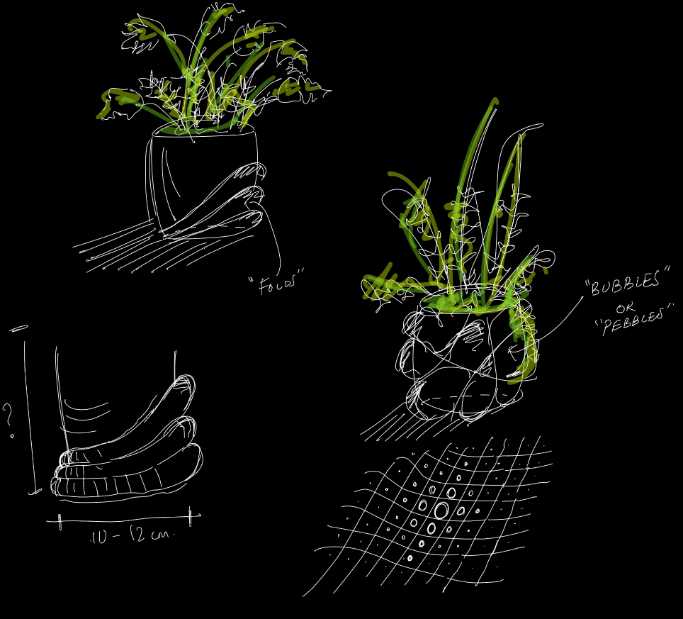
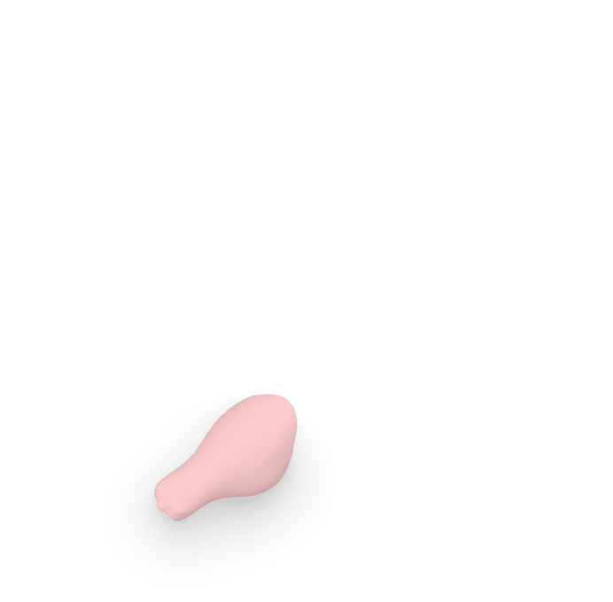
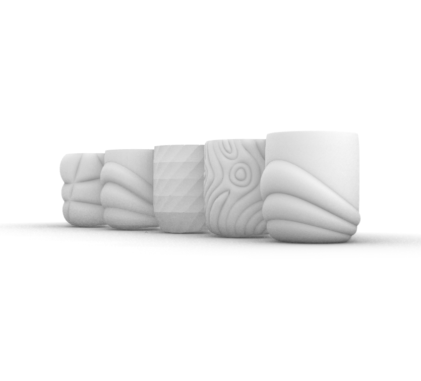
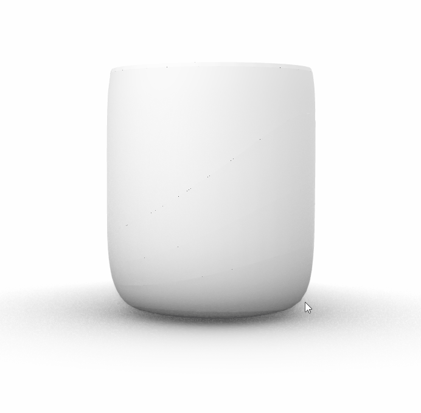
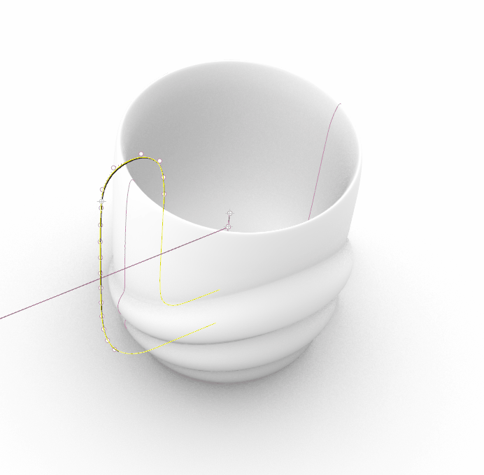

A06: Molds!
In this assignemnt, we are focusing in learning about casting. No better reason to start thinking of a new planter for my apartment! I would like to focus on something simple in desing, yet complex/challenging in execution. Not over-the-top grasshoppery thingies, but a rather smooth and delineated shape.

--The Shapes --
I went through several iterations of the design. I learned about Kangaroo, a physics solver inside of Rhino that helped crate the giant geodomes of some of the largest public spaces in the world. However, my first attempts did not go at all as I planned.

I wanted Kangaroo to add negative pressure to some areas of the planter, and "inflate them" to add a draping effect to them.

At the end, I decided to go with one of my first sketches, and stick with the draping effect using kangaroo. Watching the solver compute these tensions is mesmerizing.

-- Moldception --
With the final shape, I thought the rest would be very easy, but I was wrong. Having a cup-shaped planter meant that a regular 2 part mold would not cut it (or mold it.) I need a void in the center of this shape, and if I only do 2 molds, either the Oomo or the cement could get trapped.
Strategy >> I decided to create a 3-piece mold. 2 on the sides, and one at the top that enters the cup to create its void. To save as much material as possible, I decided to work with the same curvature as the cup for all of the molds.


As the picture suggests, having 3 fully encompassing model not only increases the number of Oomo to three, but elevates the number of 3D printed parts needed to 6!
Each of the oomo sections require a specific thickness and shape. hence, this assignment is taking 50 hours to print in 3D!

Cant wait to see the final product!